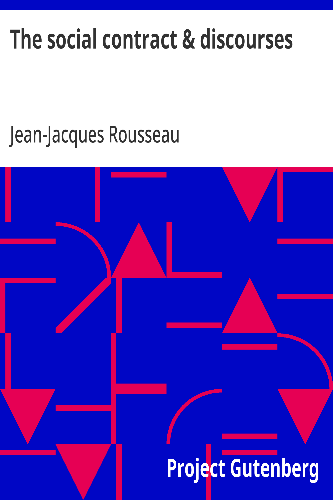

The Social Contract & Discourses
العقد الاجتماعي والخطابات
القانون والسياسة
ملك عام
ترجمة كاملة
العقد الاجتماعي لروسو: «الإنسان وُلد حرًا وهو في كل مكان مكبّل بالأغلال» — مبادئ الحق السياسي والإرادة العامة والسيادة الشعبية، مع خطابَي الفنون والعلوم وأصل عدم المساواة. ترجمة كاملة للكتاب والخطابات.
| المؤلف | جان جاك روسو (ترجمة ج. د. ه. كول) — Jean-Jacques Rousseau (translated by G. D. H. Cole) |
| سنة النص الأصلي | ١٧٦٢ |
| كلمات المصدر (الإنجليزية) | ١١٣٠١١ |
| كلمات الترجمة (العربية) | ٩٦٢٧٨ |
| مقاطع الترجمة المدققة | ٦٩ |
| مدة القراءة التقريبية | ≈ ٢١٩٠ دقيقة |
الترخيص والحقوق: النص الأصلي في الملك العام (غوتنبرغ #46333). هذه الترجمة العربية منشورة بإذن حر.